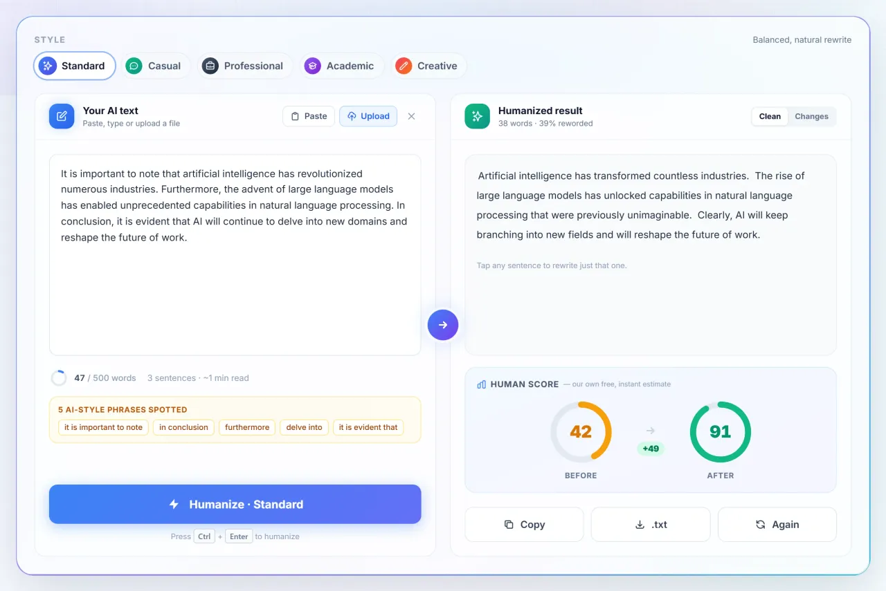
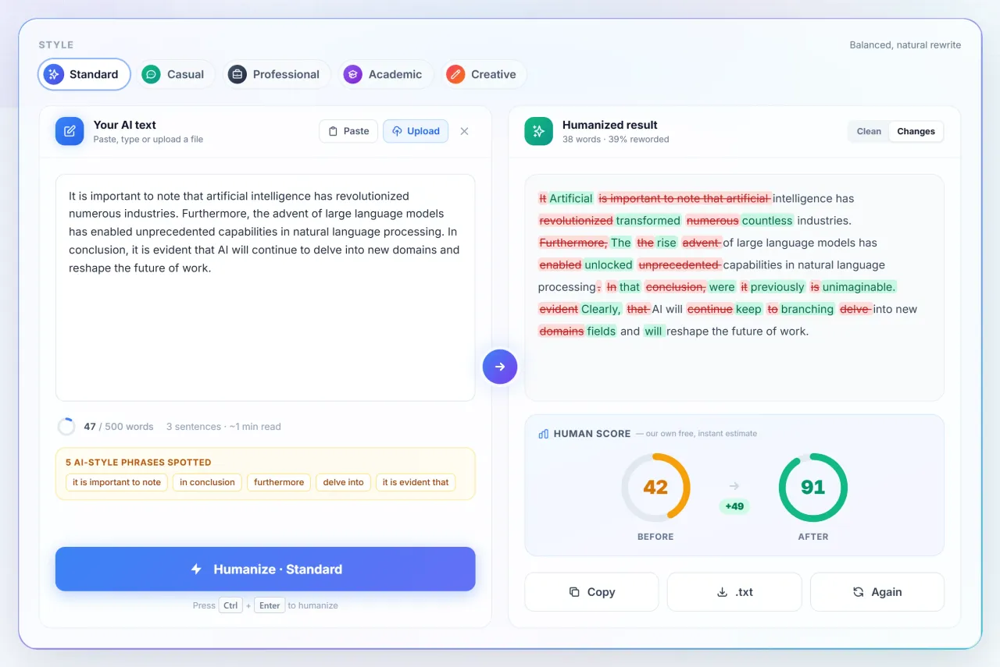
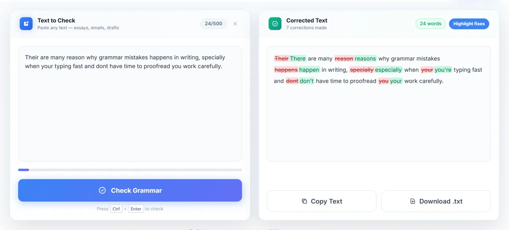
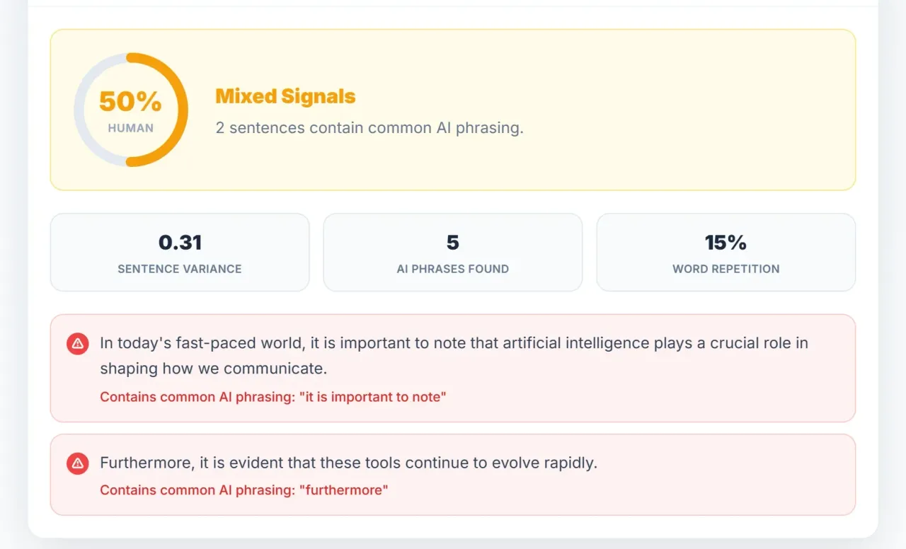

Edit AI drafts so they read like a person wrote them
AI assistants write quickly, but their drafts share habits: even sentence lengths, stock transitions and cautious filler. Text Humanizer is a free web tool that rewrites those patterns, plus a grammar checker, an AI-style detector and a plagiarism checker. This page explains how the tools work and where their limits are.
Try the AI humanizer, no signup
Why AI drafts sound robotic
None of these is wrong on its own. Together they make a draft feel generic.
Uniform rhythm
Sentences land at similar lengths, so there is no short punch after a long one.
Stock transitions
"Moreover", "Furthermore" and "In conclusion" appear far more often than people use them.
Hedged filler
Phrases like "it is important to note that" add words without adding information.
No specifics
Claims stay general: no names, numbers, places or small details only the writer would know.
The post Words that sound AI-generated lists the most common offenders, and this editing checklist walks through a manual pass.
What a humanizer actually does
It rewrites sentence structure and word choice while keeping the meaning. Text Humanizer offers several styles, and you can click any sentence in the result to rewrite just that one. A Changes tab shows what was altered, so you review the edit rather than trusting it blindly.

A humanizer is not the same as a paraphraser. A paraphraser swaps words; a humanizer also changes rhythm and structure. The difference is covered in AI humanizer vs paraphrasing tool.
The free tools
| Tool | What it does |
|---|---|
| AI Humanizer | Rewrites AI-sounding text in your chosen style and shows what changed. |
| Grammar Checker | Finds spelling, grammar and punctuation errors and lists each correction. |
| AI Content Detector | Scores how AI-like the writing style looks and marks the sentences that drive it. |
| Plagiarism Checker | Searches the web for sentences that match existing pages and links the source. |


Limits
Guests and free accounts can process up to 500 words per request and 5,000 words per month. Paid plans raise those limits; see the pricing page.
What to keep in mind
The Human Score and the AI Content Detector are the tool's own style heuristics. They are not predictions of what any school or third-party detector will say, and no tool can promise that. Use them to see which sentences still read as generic, then edit those.
If you are writing for school or work, check the rules that apply to you: using AI for school and work writing covers disclosure and sensible use. Always read the final text yourself, because a rewrite can occasionally shift nuance.
FAQ
Is it free?
Yes, within the limits above. No account is needed to try it.
Does it change my meaning?
It aims to keep the meaning, but review the result. The Changes tab shows every edit, and you can rewrite single sentences.
Can it guarantee a detector will pass my text?
No. Detectors differ and change over time, so no honest tool can guarantee it. The best protection is a draft that carries your own specifics and voice.
Is my text stored?
See the privacy policy for exactly what is kept.
Is the code open?
Yes, the source is on GitHub: a Next.js frontend and an Express backend.